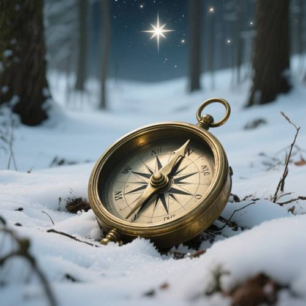
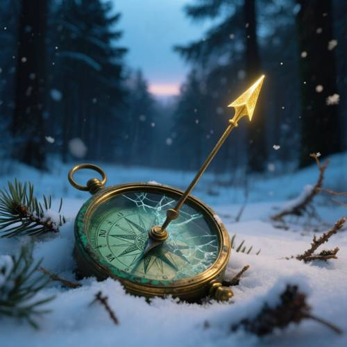
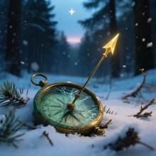
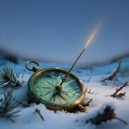
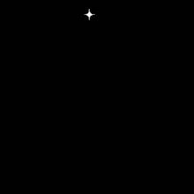

Compound — Generating picture: An ancient brass compass is abandoned on the snowy
Generating picture: An ancient brass compass is abandoned on the snowy forest floor. Its hands do not point north and south, but point with a glimmer at an invisible star in the sky.

Direct — one call, no iteration

Continuum — Kimi K3 + Qwen-Image
Judge — Direct
FAILCompound - Imagination — The prompt requires the compass to point with a glimmer at an invisible star in the sky. In the generated image, there is a very prominent, visible star in the sky. The compass needle does not appear to be pointing at this star, nor does it have a special glimmer. The key element of the star being 'invisible' is directly contradicted by its visual presence.
FAILLogical Reasoning — The image successfully depicts an ancient brass compass on a snowy forest floor. The compass hands are pointing towards the 'NNW' mark, thus not pointing north and south. However, the core logical requirement is for the compass to point to an 'invisible star'. The image instead shows a very visible star in the sky, and the compass needle is not aligned with it. This fails to represent the logical premise of the compass indicating an unseen object.
Judge — Continuum
PASSCompound - Imagination — The image shows a compass where one hand is an elongated, glowing golden arrow. This arrow-hand is pointing upwards towards the sky. The sky itself does not show any visible stars. This visual combination successfully depicts a compass pointing 'with a glimmer at an invisible star in the sky'.
PASSLogical Reasoning — The image features an aged-looking brass compass with a cracked glass face, situated in the snow within a forest. This corresponds to 'An ancient brass compass is abandoned on the snowy forest floor'. One hand of the compass is a glowing arrow pointing up towards the sky, which is not a normal north-south orientation. This fulfills the logical requirement that 'its hands do not point north and south, but point to an invisible star'.
What the agent did
Thinking
The user wants an image of an ancient brass compass abandoned on a snowy forest floor, with its hands pointing (with a glimmer) at an invisible star in the sky rather than north-south. Let me plan the generation prompt. I need to use qwen-image model. The image should show: - An ancient/vintage brass compass (weathered, patina, ornate) - Lying abandoned on snowy forest floor (snow, pine needles, twigs, forest setting) - Compass needle not pointing north-south, but pointing upward toward the sky with a glimmer/glow — suggesting it's pointing at an invisible star - The star is invisible — so perhaps a subtle glow or light shimmer in the sky direction, or the needle tilted upward, glowing tip The tricky part: a compass needle pointing at an invisible star. Visually, I can show the needle tilted/angled upward, with a magical glimmer/sparkle at its tip, pointing toward the sky where maybe there's a faint shimmer but no visible star. Composition: close-up of the compass on snow, forest background blurred, cool wintry light, maybe dusk. The needle glowing faintly, angled toward the upper part of the image. Perhaps a subtle beam or sparkle trail toward an empty spot in the sky. Since this is a "fantastical" concept, I'll craft a detailed prompt. Let me generate with qwen-image, default size (1024x1024? The harness controls sizes — I should omit width/height? The instructions say sizes and seeds are controlled by the harness. So omit width/height and seed). Actually the tool has defaults width 1024, height 1024. The policy says "Do not set a seed. Sizes and seeds are controlled by the harness." So I'll omit width/height too and just pass prompt and model. Let me write the prompt: "Cinematic close-up photograph of an ancient brass compass lying abandoned on a snowy forest floor. The compass is weathered with green patina and ornate engravings, its glass slightly frosted. Half-buried in fresh snow among pine needles and small twigs. The compass needle does not point north-south; instead it is tilted upward at an angle, its tip glowing with a bright golden glimmer, pointing toward an empty patch of twilight sky above the trees where no star is visible — only a faint magical shimmer in the air where the needle aims. Soft cool blue winter light, blurred dark pine forest background, gentle bokeh, macro detail, mystical quiet atmosphere." That's good. Generate, then inspect, then refine. Let me call generate_image.
Step 1 — `generate_image`
{
"prompt": "Cinematic macro photograph of an ancient brass compass lying abandoned on a snowy forest floor. The compass is weathered with green patina, ornate engraved dial, and slightly frosted cracked glass, half-buried in fresh snow among pine needles and small twigs. Its needle does not point north-south: instead the needle is tilted upward at a strange angle, its tip emitting a bright golden glimmer, pointing up toward an empty patch of dusky twilight sky visible above dark pine trees \u2014 no star is visible there, only a faint magical shimmer of light in the air exactly where the needle aims. Cool blue winter light, soft falling snowflakes, blurred dark forest background with bokeh, mystical quiet atmosphere, high detail.",
"model": "qwen-image"
}
Result img_0

Thinking
The image is quite good. Let me inspect it against the prompt: - Ancient brass compass ✓ (weathered, patina, cracked frosted glass ✓) - Abandoned on snowy forest floor ✓ - Needle not pointing north-south, tilted upward with a golden glimmer ✓ — very striking - Pointing at an invisible star in the sky — there's actually a visible glowing star shape in the sky. The prompt says "invisible star". The model rendered a visible sparkle/star in the sky. That's a deviation: the star should be invisible. The needle points up but not exactly at that star — the star is at top-left, needle points up-right. Should I edit to remove the visible star? The concept: "point with a glimmer at an invisible star in the sky." So the sky should appear empty — the magic is that the compass points at something unseen. Removing the visible star would improve fidelity to the prompt. Also the needle is quite long — it looks like an arrow extending far out of the compass. It's fantastical but acceptable; actually it reads well as "pointing at the sky." It's a bit oversized though — like a spear. It might be fine artistically. But it somewhat looks disconnected from a normal compass. I think it's acceptable — it clearly shows the needle pointing skyward with a glimmer. Main fix: remove the visible star from the sky, since the star is supposed to be invisible. Let me do an edit: "Remove the glowing star shape from the sky; the sky is empty dusk, only a faint subtle shimmer of light remains where the needle points." Per edit rules: describe the change and the fill. Let me inspect first — the image looks good overall at this scale. The star in the sky is clearly visible. Let me edit it out. Edit prompt: "Replace the bright glowing four-pointed star in the sky with empty dusky blue sky; leave only a very faint, subtle shimmer of golden light haze near the tip of the needle where it aims." Also check the needle glimmer — good. Mark best first? The current image is good but has a visible star contradicting "invisible star". I'll mark img_0 as best tentatively (it's a good result), then attempt the edit; if the edit improves, mark the new one.
Step 2 — `mark_best`
{
"image": "img_0",
"reason": "Strong first result: ancient brass compass with patina and cracked glass abandoned in snow, needle lifted skyward with a golden glimmer. Only flaw: a visible star in the sky contradicts the \"invisible star\" concept."
}
Step 3 — `edit_image`
{
"image": "img_0",
"prompt": "Replace the bright glowing four-pointed star in the sky with plain empty dusky blue twilight sky, matching the surrounding sky gradient. Leave the sky completely empty \u2014 no visible star \u2014 with at most a very faint, subtle golden haze of light in the air near where the glowing needle tip aims.",
"model": null
}
Result img_1

Thinking
The edit removed the visible star — good. But it also significantly changed the image: - The forest background is now mostly blurred out — the dark pine forest is gone, replaced by a plain blue sky and vague blurry horizon. The "snowy forest floor" / forest atmosphere is much weaker. - The glowing arrowhead tip of the needle is gone; now it's a thin needle with a faint golden trail. The glimmer is weaker. - Falling snowflakes are gone. - The dusk warmth is gone; the image is flatter blue. The edit leaked well beyond the star. img_0 was richer: forest, snowflakes, bokeh, glowing needle. The only problem was the visible star. Options: 1. Go back to img_0 (best) and try edit again with a different seed — same prompt. The edit might leak differently. 2. Try inpaint on img_0: mask just the star region and fill with sky. That preserves everything else pixel-exact. The star is small and in a simple sky region — inpainting is well-suited. The sky there is smooth gradient, so fill should be trivial. The inpaint approach seems ideal: segment the star in img_0, inpaint with "dusky twilight sky". The star is at roughly [0.42-0.50, 0.05-0.11] normalized — around x=450, y=75 in the 1024 image. Let me use segment_points or segment_boxes on img_0 targeting the star. Actually a simple box around the star would work with segment_boxes. Or just segment with text "the glowing star in the sky". Let me do: segment_points on img_0 with a point at the star center (~[470, 78] normalized [0.459, 0.076]). Then inpaint with prompt "empty dusky blue twilight sky with soft gradient". Actually simpler: segment with description "the bright glowing star shape in the sky". Then inpaint. The mask should be small; the fill region is simple sky — very reliable. Alternatively, just try edit_image on img_0 again with a different seed. But edit_image leaked a lot the first time; inpaint with a tight mask is the safer, pixel-exact approach here. The guidance says: prefer edit_image first (done, it leaked), use inpaint when edit_image leaks changes outside the target. This is exactly that case. Plan: 1. segment img_0 for the star. 2. inpaint_image with the mask, prompt describing sky contents. 3. Mark best accordingly.
Step 4 — `segment`
{
"image": "img_0",
"description": "the bright glowing four-pointed star in the sky"
}
Result img_2

Thinking
The mask is clean — just the star. Now inpaint img_0 with this mask, prompt describing the desired contents of the region: "clear dusky blue twilight sky, smooth soft gradient, empty sky". Maybe dilate slightly to catch the glow halo — the star has a soft glow around it. dilate 10-15 would help remove the halo. Let me use dilate 15.
Step 5 — `inpaint_image`
{
"image": "img_0",
"mask": "img_2",
"prompt": "clear empty dusky blue twilight sky with a smooth soft gradient, faint cold evening haze, no star",
"dilate": 15
}
Result img_3
Thinking
The inpaint worked perfectly. The star is gone, the sky is a smooth dusky gradient, and everything else is preserved pixel-exact: the forest, falling snow, the glowing needle pointing skyward, the compass with cracked glass and patina. Let me verify by inspecting the region where the star was, to make sure there's no residual glow or artifact. The star was at roughly normalized [0.42-0.50, 0.04-0.11]. Let me crop and check.
Model
The star is gone and everything else is preserved. Let me zoom into the former star region to verify there's no residual glow or artifact.
The sky where the star was is now clean, smooth dusky blue with soft blurred pine silhouettes at the edges — no residual star or glow artifact. Now the image matches the prompt fully: - Ancient brass compass ✓ (patina, engraved dial, cracked frosted glass, pocket-watch ring) - Abandoned on snowy forest floor ✓ (half-buried in snow, pine needles, twigs, dark forest behind) - Hands don't point north-south; the needle rises skyward at an impossible angle with a golden glimmer ✓ - Points at an invisible star ✓ (the sky is empty where it aims — the magic is implied) Mark img_3 as best and stop. Good enough is a stop condition.
Step 7 — `mark_best`
{
"image": "img_3",
"reason": "Final version: ancient patinated brass compass with cracked glass half-buried in snow on the forest floor; its needle impossibly lifted skyward with a golden glimmer, aiming at an empty patch of dusk sky \u2014 the invisible star. Star removed cleanly, all atmosphere (forest, snowfall, bokeh) preserved."
}
Thinking
Done. Summarize for the user.
Model
Done. The final image shows: - **The ancient brass compass** — weathered green patina, an ornate engraved rose dial, cracked and frosted glass, half-buried in fresh snow among pine needles and twigs. - **The impossible needle** — instead of settling north–south, it rises out of the dial at a strange angle, its arrowhead burning with a golden glimmer, aimed up into the dusk. - **The invisible star** — the patch of twilight sky where the needle points is completely empty. The magic is in the absence: the compass clearly sees something that isn't there. The snowy forest, drifting snowflakes, and cool blue bokeh complete the quiet, mystical mood. The marked image is the one returned.